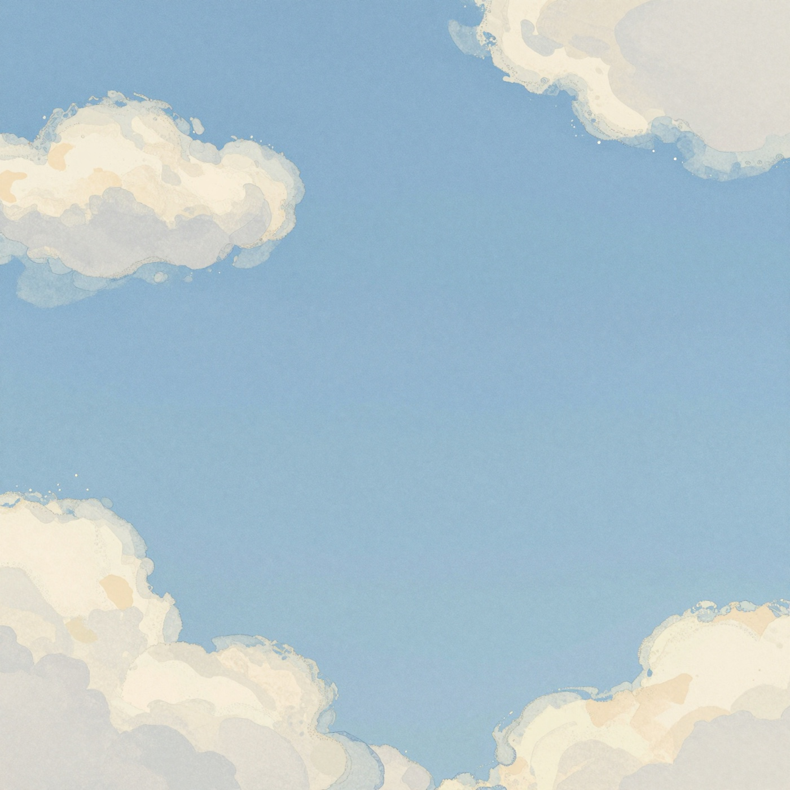
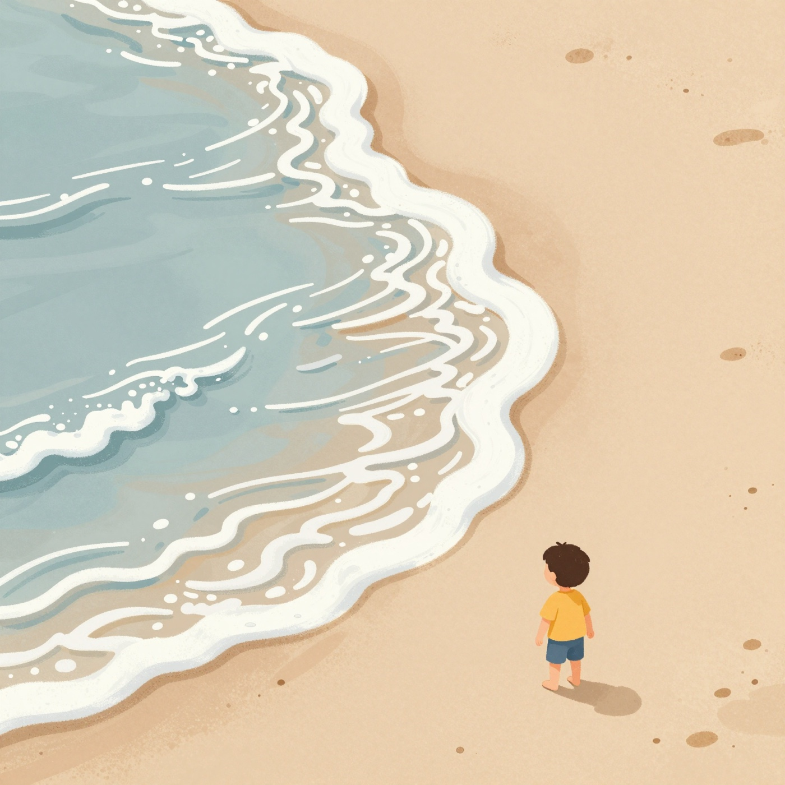
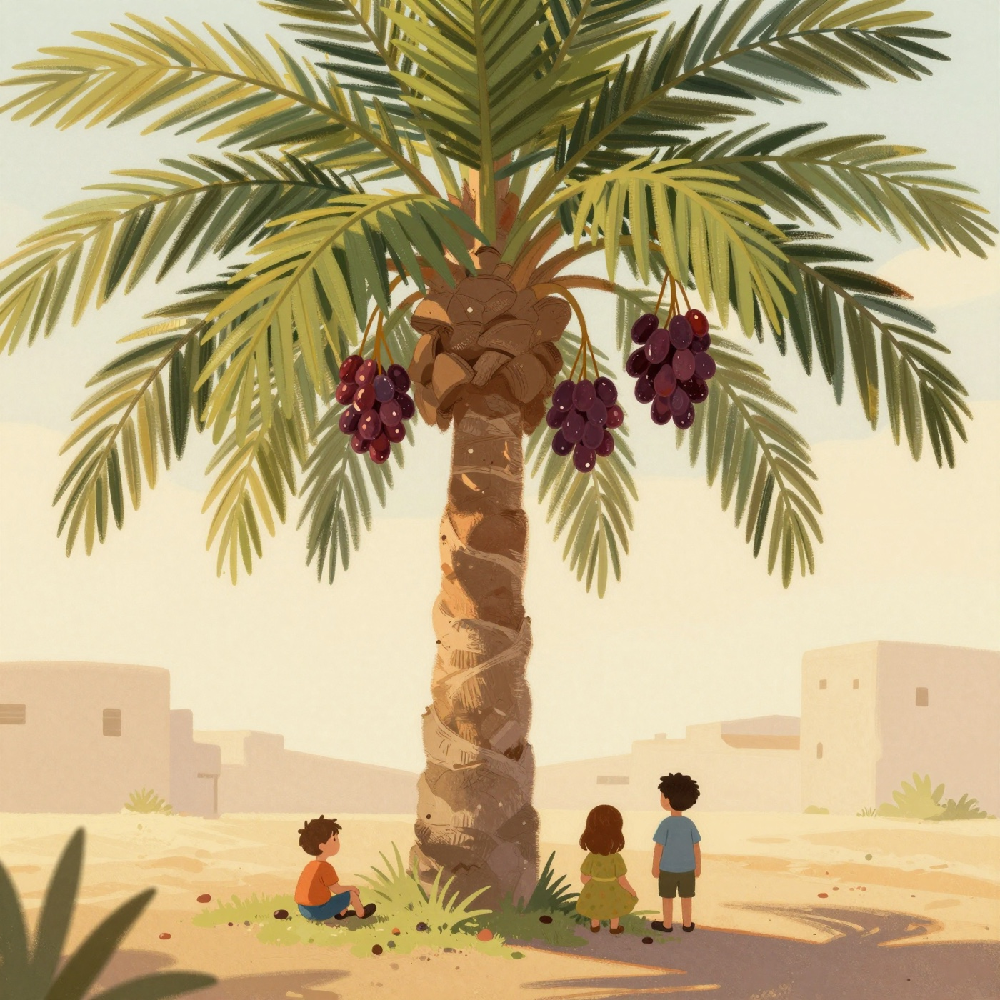
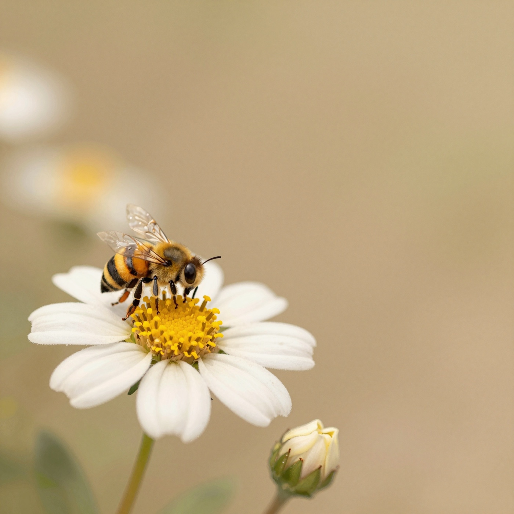
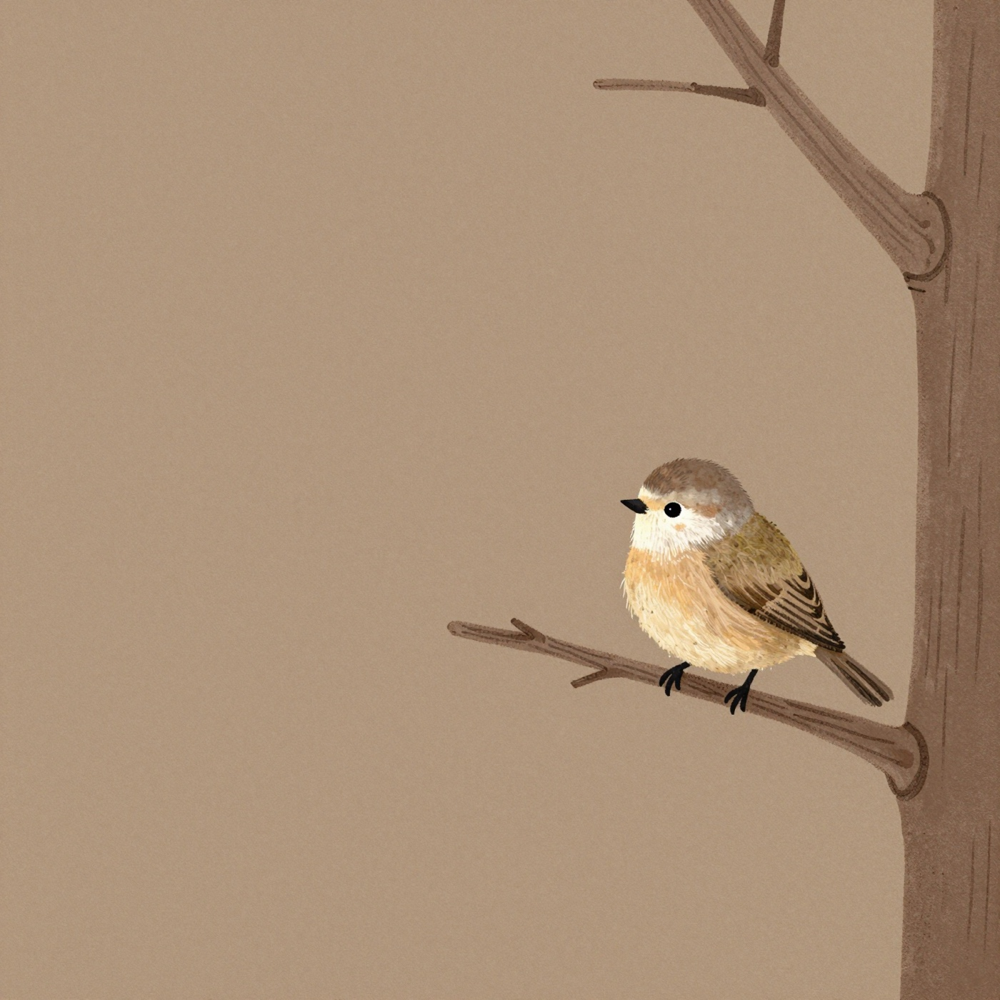
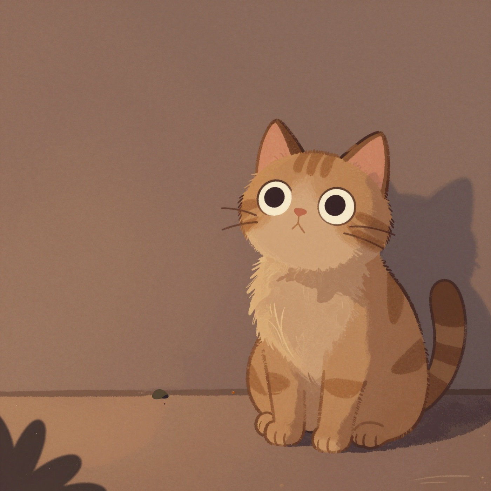
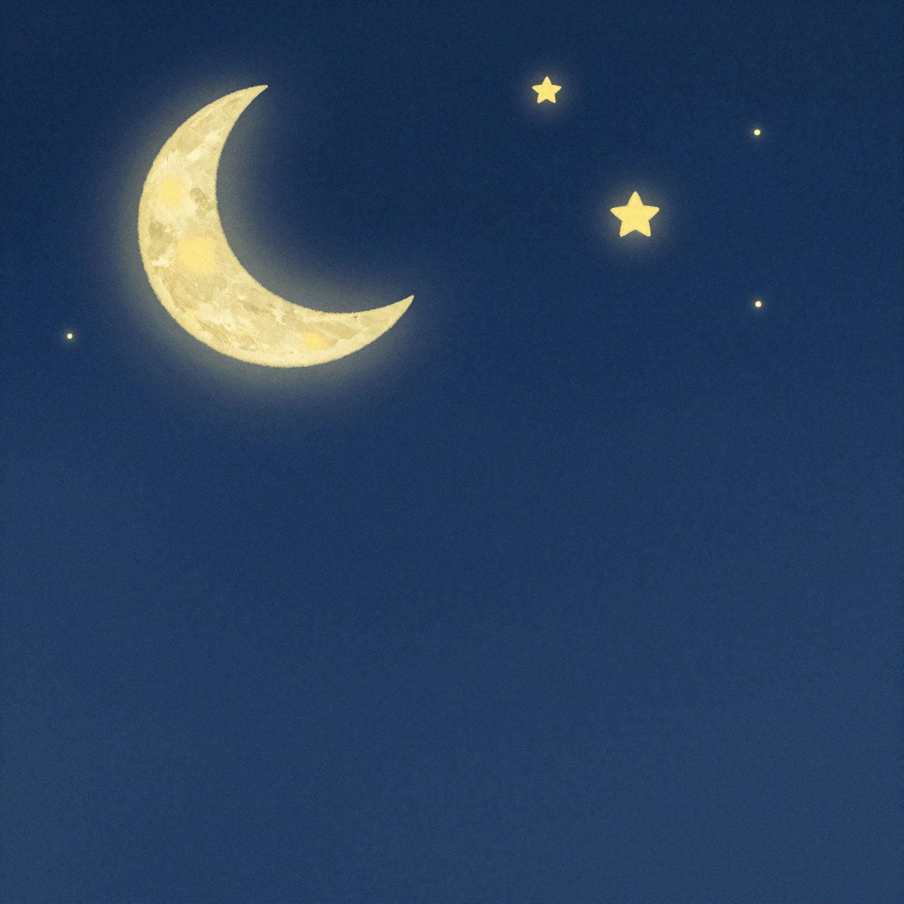
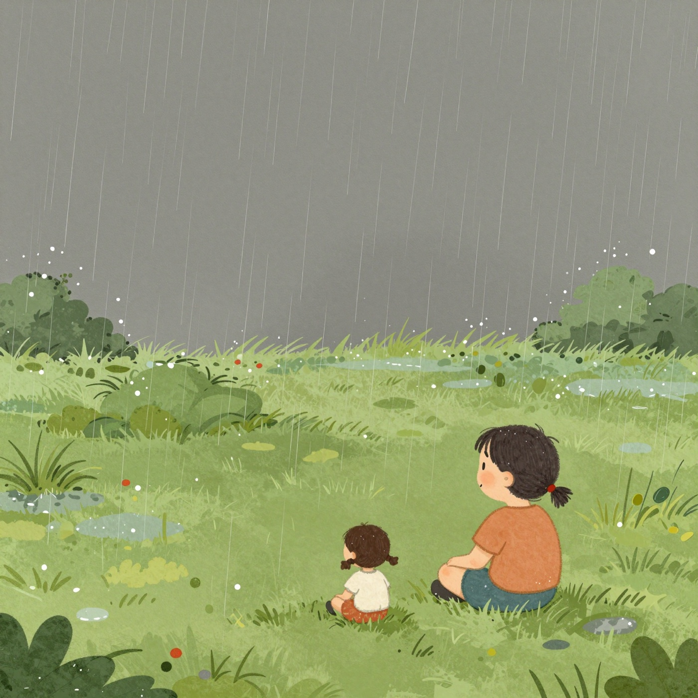
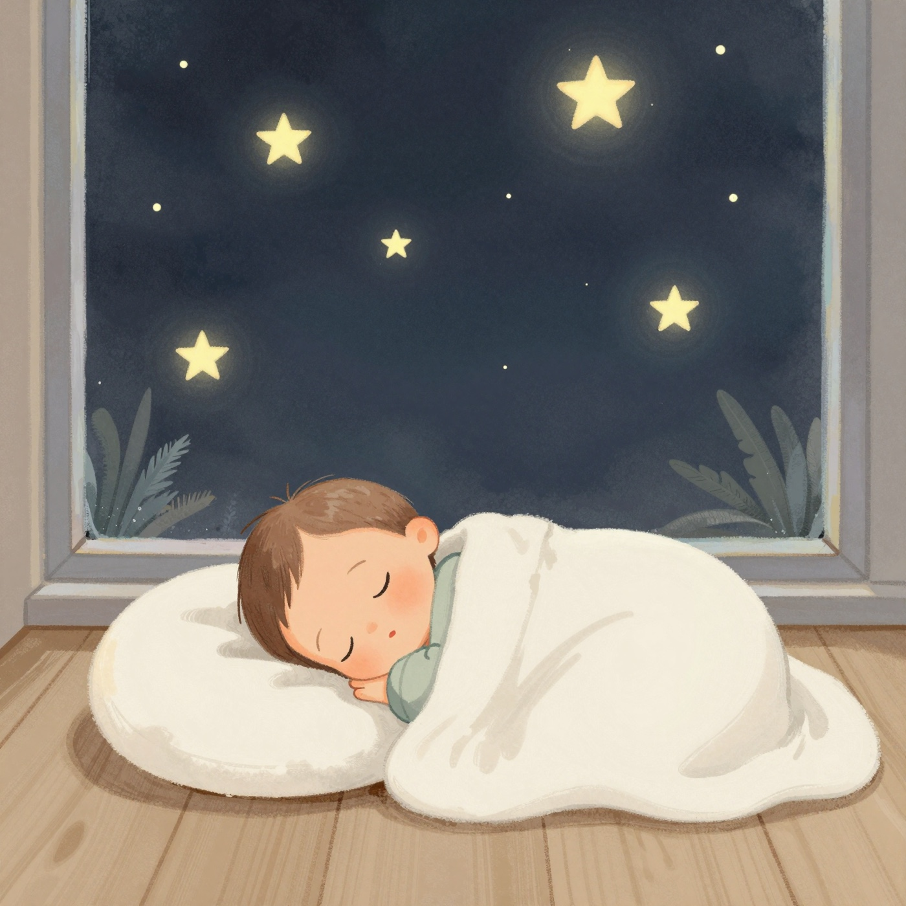

Wide and blue and nothing holding it up. It is there every single morning when you look.
Allah is the Maker of everything.
واسعةٌ زرقاء، ولا شيءَ يُمسِكُها. وهي هناك كلَّ صباحٍ حينَ تنظُر.
اللهُ خالِقُ كُلِّ شيء.

It comes up the sand and goes back again, all day and all night, and never once forgets.
Allah is the Maker of everything.
يصعَدُ على الرَّمْلِ ثمّ يعود، طَوالَ النهارِ وطَوالَ الليل، ولا ينسى مرّةً واحدة.
اللهُ خالِقُ كُلِّ شيء.

Tall, with its feet in the sand, holding up a hundred sweet dates for whoever walks past.
Allah is the Maker of everything.
طويلةٌ، قدَماها في الرَّمْل، تحمِلُ مِئةَ تمرةٍ حُلوةٍ لمن يمُرُّ بها.
اللهُ خالِقُ كُلِّ شيء.

Smaller than your thumb, and it knows the way to every flower and the way home again.
Allah is the Maker of everything.
أصغرُ من إبهامِك، وتعرِفُ طريقَها إلى كلِّ زهرة، وطريقَ العودةِ إلى بيتِها.
اللهُ خالِقُ كُلِّ شيء.

It leaves the branch with nothing underneath it at all, and the air holds it up anyway.
Allah is the Maker of everything.
يترُكُ الغُصنَ ولا شيءَ تحتَه أبداً، ومع ذلك يحمِلُه الهواء.
اللهُ خالِقُ كُلِّ شيء.

Four soft feet that make no sound at all, and eyes that can see in the dark better than yours.
Allah is the Maker of everything.
أربعُ أقدامٍ ناعمةٍ لا تُصدِرُ صوتاً، وعَينانِ تُبصِرانِ في الظلامِ أفضلَ من عينَيك.
اللهُ خالِقُ كُلِّ شيء.

A thin white curve, and behind it more stars than anyone has ever finished counting.
Allah is the Maker of everything.
قَوسٌ أبيضُ رفيع، ومن ورائِه نُجومٌ أكثرُ ممّا أتمَّ أحدٌ عدَّه.
اللهُ خالِقُ كُلِّ شيء.

It goes up without anyone seeing, and comes down again on the dry ground, and the ground turns green.
Allah is the Maker of everything.
يصعَدُ دونَ أن يراه أحد، ثمّ ينزِلُ على الأرضِ اليابسة، فتُصبِحُ الأرضُ خَضراء.
اللهُ خالِقُ كُلِّ شيء.

The sky, the sea, the palm, the bee, the bird, the cat, the moon, the rain — and one small boy in a blanket.
Goodnight, Yusuf.
السماءُ، والبحرُ، والنخلةُ، والنحلةُ، والطائرُ، والقِطّةُ، والقمرُ، والمطر — وطفلٌ صغيرٌ في غِطائِه.
تُصبِحُ على خير، يا يوسف.